本文用同一个 NoC router 建两个模型：LT 做「连通性和带宽够不够」的粗粒度探索，AT 做「延迟和拥塞怎么样」的细粒度探索。两者共用一份真实 router spec、同一套拓扑与路由参数、同一条服务时间公式，差别只在流控协议与时间模型。
| LT router | AT router | |
|---|---|---|
| 流控协议 | ready / valid 握手 | credit 流控 |
| 时间模型 | b_transport 累加每跳固定服务时间 | nb_transport 四相 + sc_time& 时间注解 + 链路排队 |
| 探索粒度 | 粗粒度：连通性和带宽够不够 | 细粒度：延迟和拥塞怎么样 |
| 能看见 | 目的可达、平均跳数、链路服务率、需求带宽 | 延迟-负载曲线、饱和吞吐、排队等待、最忙链路 |
| 看不见 | 排队、饱和点、拥塞 | VC 分配、arbiter 微架构、逐周期尾延迟 |
AT 没有逐周期流水线，但竞争一点没丢：所有拥塞都被上移到「输出链路 = 单服务器」，用 link_free_at[op] 一个时间戳数组和 sc_time& delay 时间注解兑现。
| 这一版能回答 | 这一版不能回答 |
|---|---|
| mesh / torus / ring 谁更适合目标 workload | VC 数量、分配策略的微架构收益 |
| XY / YX / oblivious 路由在均匀与对抗性流量下的差异 | arbiter 微架构与逐周期 HOL blocking |
| 注入率扫描 → 延迟-吞吐曲线与饱和点 | cycle 级尾延迟精度 |
| 消息长度、链路带宽、消息粒度的取舍 | 精确 power / area |
| 任务映射与链路利用率分布 | 协议级死锁的形式化证明 |
实测三句话：零负载延迟对齐解析式 22 ns（AT 24.11 ns / LT 23.00 ns）；AT 的延迟随负载从 24.11 涨到 72.29 ns 而 LT 恒为 23.00 ns；43 轮参数扫描主体在数秒内完成，这个速度才让「拓扑 × 路由 × 流量 × 注入率 × 消息长度」的组合搜索成为可能。
配套代码全部可编译、可运行，扫描结果可复现。全部文件（文章、源码、配图、43 轮扫描数据）都在公开仓库 andyzhenghome/systemc-tlm-router-dse，§14 给出从 clone 开始的完整复现步骤。文章里所有数字都来自 code/noc_txn_demo 的真实输出。
在动手写 router 之前，先把 TLM 的世界观讲清楚。否则后面的代码看起来像一堆莫名其妙的 delay 加减法。
TLM（Transaction Level Modeling）不描述 valid 信号在第几个时钟沿拉高，而是描述一次完整的通信：
谁，在什么时候，把什么东西，交给谁。
这四个要素在 TLM-2.0 里一一对应：
| 要素 | TLM-2.0 载体 |
|---|---|
| 谁 / 交给谁 | initiator socket ↔ target socket |
| 什么东西 | tlm_generic_payload（command / address / data / extensions） |
| 什么时候 | sc_time& delay 时间注解 |
| 完成与否 | tlm_sync_enum / tlm_response_status / 四相 phase |
一个 payload 从头走到尾可以穿过多个模块，端到端复用同一个对象。tlm_mm_interface 管它的池化与引用计数，tlm_extension 往上面挂私有元数据——这些都是为了让「一次通信」成为一个可以携带状态的对象，而不是一串波形。
TLM 里最容易误解的是 sc_time& delay：
tlm::tlm_phase ph(tlm::BEGIN_REQ);
sc_core::sc_time d = sc_core::sc_time(5, sc_core::SC_NS);
sock->nb_transport_fw(*t, ph, d); // d 既是输入也是输出它是一张随事务传递的时间支票，不是 wait()。 上游把「这件事应该发生在 now + delay」写进去，下游在这个语义时刻继续处理；下游也可以往里追加自己的耗时，再把同一张支票传给下一跳。于是一条消息穿过 4 跳，绝对时间严格连续，却不需要 sc_clock、不需要 SC_METHOD、不需要任何一个进程被唤醒。
两种编码风格由此分叉：
| AT（Approximately Timed） | LT（Loosely Timed） | |
|---|---|---|
| 主接口 | nb_transport_fw / bw，非阻塞 | b_transport，阻塞 |
| 相位 | 标准四相 + 扩展相位 + PEQ 时间事件 | 无相位 |
| 时间 | 注解里可以表达「排队到某时刻才开始」 | 只累加每跳固定服务时间 |
| 反压 | 可以（本文用 credit） | 没有 |
| 典型用途 | 性能 / 拥塞分析 | 软件开发、功能验证、早期 bring-up |
txn_ext）随 payload 端到端走；instance-specific extension（inj_ext）只在某一条链路的一个端点可见。acquire()/release()，避免每条消息 new/delete。transport_dbg：直访与无副作用快照，不推进仿真时间。tlm_analysis_port：把性能统计挂在事务通路之外，零时序影响。tlm_quantumkeeper：LT 的 temporal decoupling，本地时间先跑，攒够了再 sync()。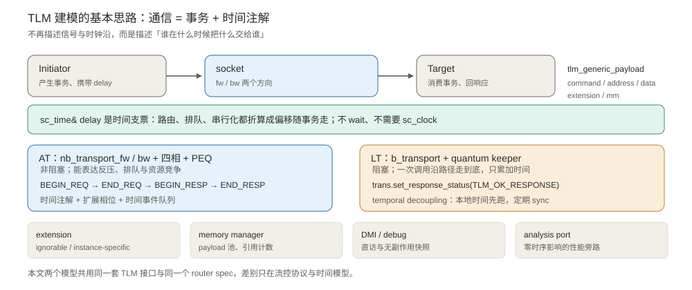
一句话：本文两个模型用的是同一套 TLM 接口、同一份 router spec、同一条服务时间公式。差别只有两件事——流控协议（credit vs ready/valid）和时间模型（有没有排队）。
片上网络（NoC）把很多计算节点连起来，负责转发的就是 router。一个典型的虚通道输入排队 router 有 5 个方向端口 N / E / S / W / L（L 是本地网络接口 NI），每条输入通路大致包含：
BookSim2 的 IQRouter 把一跳拆成四级流水：
| 阶段 | 做什么 | 为什么需要 |
|---|---|---|
| RC Route Computation | 解析目的坐标，确定输出端口 | 每跳都要重新选路 |
| VA VC Allocation | 申请下游的一条虚通道 | 多个输入可能争同一个下游资源 |
| SA Switch Allocation | 仲裁谁本周期使用 crossbar | 一个输出端口一次只能服务一条消息 |
| ST Switch Traversal | 穿过 crossbar 上链路 | 传输本身要占用链路时间 |
SA 这一级就是「竞争」的物理来源：输出端口是独占资源，后来的必须等。这也是本文模型唯一必须保留的约束。
如果上游不管下游有没有地方存，一味地发，缓冲就会溢出。credit-based flow control 的做法是：
它同时带来一个有用的副作用：credit 迟迟不还，就说明下游堵了。所以 credit 既是流控，也是拥塞的观测窗口。本文的 AT 模型正是靠这一点做反压。
换拓扑只改「每个输出端口连到哪个邻居」，router 本身不用动；换路由算法只改 route_port()，连线不用动；换流量模式只改 pick_dst()，代码一行都不用动。这就是「只建一个统一 router 模型」的含义。
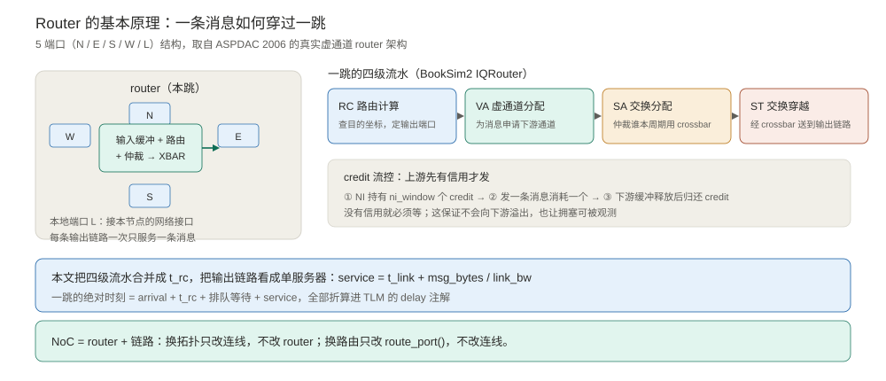
降低抽象层级不等于可以拍脑袋画方块。你仍然需要一份真实 spec 来确定端口数、缓冲在哪、路由函数怎么走、哪条链路算一跳——否则参数扫描扫的是自己想象出来的机器。
本文用 Mullins / West / Moore 在 ASPDAC 2006 论文中的 Fig. 1：
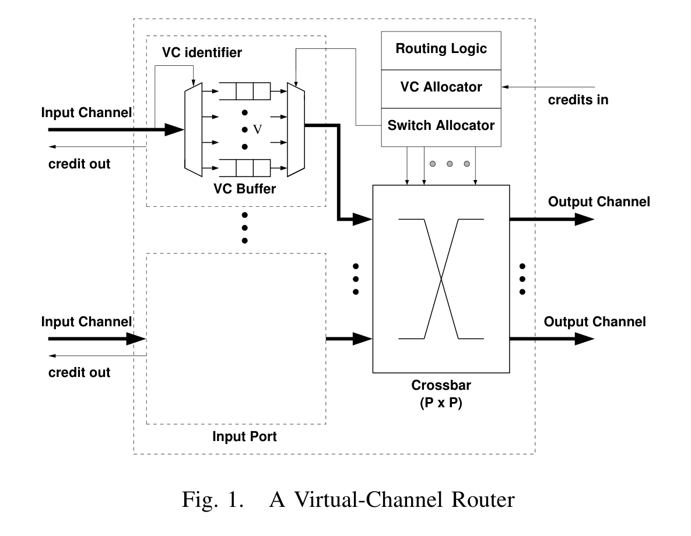
| 真实 spec 部件 | 本模型怎么处理 | 理由 |
|---|---|---|
| Input / Output Channel | 5 端口 N/E/S/W/L，每端口一个链路 server | 架构探索必须知道 radix 和方向 |
| VC identifier | 抽象掉，路由结果直接是输出端口 | VC 数相关的结论不在本层回答 |
| VC Buffer (FIFO) | 输入队列深度只统计、不设硬上限 | 排队网络常见假设，饱和由服务率决定 |
| Routing Logic | route_port()，支持 XY / YX / oblivious | 本层的核心设计旋钮 |
| VC Allocator | 抽象掉 | 需要周期级模型或 RTL 才能评估 |
| Switch Allocator | 抽象成「一个输出端口同时只服务一条消息」 | 这正是链路单服务器约束 |
| Crossbar (P×P) | 隐含在 link_free_at[op] 里 | 端口级独占即 crossbar 的带宽约束 |
| credits in / out | AT 用 ni_window + BEGIN_RESP；LT 用 ready/valid | 两套协议对应两种探索粒度 |
流水线参数体系沿用 BookSim2 IQRouter 的 RC → VA → SA → ST 与 routing_delay / vc_alloc_delay / sw_alloc_delay / st_final_delay / credit_delay。本层把它们合并成一个 t_rc，加上 t_link + msg_bytes / link_bw 构成服务时间。
这是本文最核心的设计决定。
| LT router | AT router | |
|---|---|---|
| 协议 | ready / valid 握手 | credit-based flow control |
| 下游何时可接收 | 永远 ready=1 | 要有 credit |
| 没有资源时 | 不存在这种情况 | 上游停发，消息在链路 server 前排队 |
| 时间模型 | 每跳固定 t_rc + t_service 累加 | start = max(arrival+t_rc, link_free_at[op]) |
| 结果 | 延迟与注入率无关 | 延迟随负载上升，吞吐封顶 |
| 适合回答 | 连通性和带宽够不够（粗粒度探索） | 延迟和拥塞怎么样（细粒度探索） |
粗粒度问题长这样：「这个拓扑能不能把 A 送到 B？平均几跳？给 16 B/ns 的链路，64 B 的消息会不会把带宽吃光？」——它们只需要路径长度和服务时间，不需要知道谁排在谁前面。
细粒度问题长这样：「注入率翻倍之后延迟涨多少？哪条链路先饱和？还有多少余量？换路由能不能把热点摊开？」——它们必须建模排队，而排队的前提是「资源被占用时后来的要等」，也就是 credit 反压。
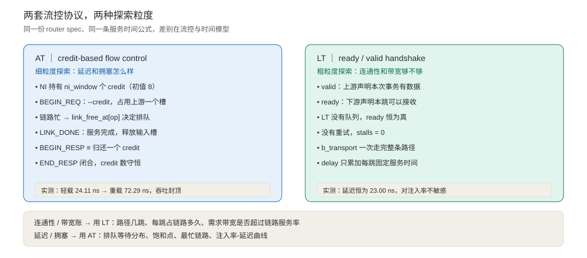
NI 持有 ni_window 个 credit
│
├─ BEGIN_REQ（注入一条消息） credit--，占用下游一个队列槽
│
├─ 链路服务完成 LINK_DONE 释放输入槽
│
├─ BEGIN_RESP ≡ 归还一个 credit 经四相反向路径送回上游
│
└─ END_RESP 上游确认，本跳闭合BEGIN_RESP 在这里不只是「响应」，它就是一个 credit。四相握手因此变成了流控协议的一部分，而不是额外的礼仪。
上游：valid = 1（本次事务有数据）
下游：ready = 1（本跳可以接收） ← LT 没有队列，恒为真
握手成立 → b_transport 沿路径走完 → delay += t_rc + t_service没有信用、没有重试、没有 stalls。一次 b_transport 调用就把消息从源送到汇，非常适合快速验证「路通不通、账算不算得过来」。
LT 不是错的模型，只是不回答拥塞问题。 拿它做容量规划才是误用。
共同点是：要的是「趋势」和「拐点」，不是某一个 cycle 上谁先谁后。
模型价值 = 能区分的设计方案数 × 每个结论的可信度 ÷ 单次仿真耗时把 router 做成 cycle-accurate 会把前两项拉满，却把第三项拖垮。于是有了不同层级的取舍：
| LT（本文） | AT（本文） | 周期级模型 / RTL | |
|---|---|---|---|
| 事务粒度 | 1 条消息 = 1 payload | 1 条消息 = 1 payload | 逐周期信号 |
| 流控 | ready / valid | credit | 完整缓冲与仲裁 |
| 竞争建模 | 无 | 输出链路单服务器 + 排队 | 逐周期资源争用 |
| 能看见饱和点 | 不能 | 能 | 能 |
需要 sc_clock | 否 | 否 | 是 |
| 典型用途 | 连通性、带宽账、功能验证 | 架构探索、参数扫描 | 微架构选型、签核 |
对架构探索而言，一条消息占用链路的时间只取决于它有多长和链路有多快：
t_serialize = msg_bytes / link_bw这是一个标量。把它算出来加进 delay，和把消息切成多个片再逐个累加，在「这一跳什么时候结束」这个问题上等价。省下的是 4 倍事务数、大量扩展相位、每周期唤醒的仲裁进程。
最容易踩的坑：如果「只用 transaction」被实现成「每跳固定延迟累加一遍」，模型就退化成 LT 了。看实测：
| 模型 | gap=64（轻载） | gap=1（重载） | 结论 |
|---|---|---|---|
| LT（ready/valid） | 23.00 ns | 23.00 ns | 对注入率完全不敏感 |
| AT（credit + 竞争） | 24.11 ns | 72.29 ns | 延迟翻近 3 倍，能看到拐点 |
LT 会把饱和点画成一条不存在的直线。所以真正要保留的不是逐周期细节，而是「资源有限、后来的要排队」这件事。
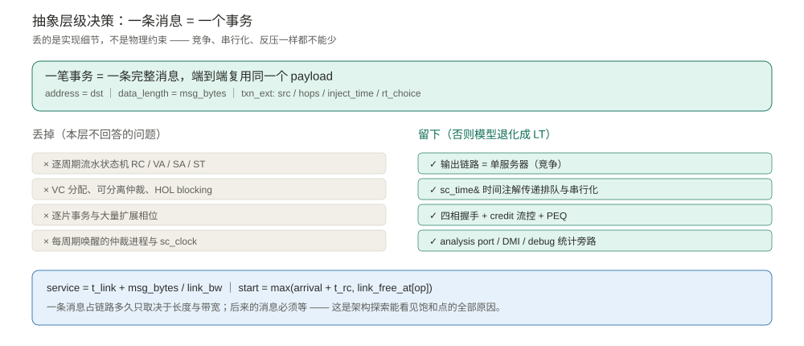
把竞争上移到输出端口，只需一个时间戳数组：
arrival = now + delay // 时间注解给出的到达时刻
start = max(arrival + t_rc, link_free_at[op]) // 端口忙就排队
service = t_link + msg_bytes / link_bw // 串行化时间
link_free_at[op] = start + service
delay = start + service - now // 下游在 now+delay 看到它start - arrival - t_rc 就是排队等待。整条链路服务率 1 / service 决定饱和吞吐。
关键点：delay 不是 wait()。 路由计算、排队、串行化全部折算成一个时间偏移交给下游，下游在 now+delay 的语义上继续处理。没有 sc_clock、没有 SC_METHOD(arbitrate)，进程调度开销几乎为零。
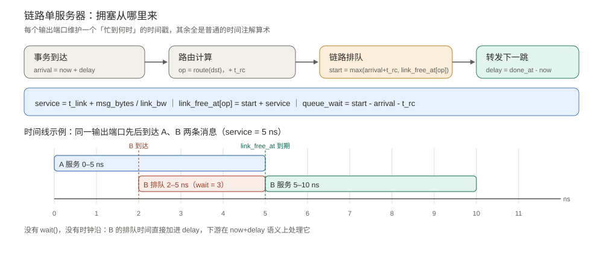
架构探索模型必须校准，否则扫描出来的比较结论没有可信度。两个解析锚点：
| 锚点 | 解析式 | 代入本文默认配置 | 实测 |
|---|---|---|---|
| 零负载延迟 | avg_hops × (t_rc + t_link + msg_bytes/link_bw) | 3.6667 × (1 + 1 + 4) = 22.0 ns | AT 24.11 / LT 23.00 ns |
| 单链路服务率 | 1 / (t_link + msg_bytes/link_bw) | 1 / 5 ns = 200 msgs/us | 全系统饱和于 ≈2400 msgs/us |
差出的 1–2 ns 来自注入时刻按 gap 离散化对齐，以及 t_credit 的反向路径开销，量级合理。若锚点对不上，先查服务时间公式和 hops 统计，不要急着扫参数。
| TLM-2.0 特性 | AT 模型用在哪 | LT 模型用在哪 |
|---|---|---|
tlm_generic_payload | 一条消息一个 payload，端到端复用 | 同左 |
自定义 protocol types | 脱离 base protocol 单事务限制 | 共用同一套定义 |
标准四相 BEGIN_REQ/END_REQ/BEGIN_RESP/END_RESP | 主通路，BEGIN_RESP ≡ credit | 不用 |
扩展相位 LINK_DONE / CREDIT | 链路完成时刻与 credit 归还事件 | 不用 |
nb_transport_fw / bw | 前向 / 反向主通路 | 不用 |
b_transport | 混合调用兜底 | 主通路 |
sc_time& 时间注解 | 承载排队 + 串行化时间 | 只累加固定服务时间 |
peq_with_cb_and_phase | 驱动反向路径时间事件 | 不用 |
ready / valid（rv_ext） | 不参与时序 | 每跳握手 |
credit（ni_window + BEGIN_RESP） | NI 硬反压 | 无 |
tlm_quantumkeeper / global quantum | 不用 | temporal decoupling |
| ignorable extension | txn_ext（消息元数据） | txn_ext + rv_ext |
| instance-specific extension | inj_ext（NI 私有上下文） | 不用 |
memory manager + acquire/release | payload 池与引用计数 | 同左 |
multi_passthrough_target_socket | 接所有上游链路 | 同左 |
simple_initiator_socket_tagged | tag = 输出端口 | 同左 |
tlm_analysis_port / tlm_analysis_if | 零副作用性能旁路 | 同左 |
transport_dbg | 读输入队列深度快照 | 读握手计数 |
| DMI | router 正确拒绝，sink 授予 | 同左 |
TLM_COMPLETED 早完成 | 终点 sink 短路四相 | 不适用 |
巡礼：cancel_all()、deep_copy_from、多 passthrough initiator、大小端、DMI、analysis | code/tlm_feature_tour.cpp | 同左 |
教学价值一点没少，只是重心从「扩展相位驱动流水线」移到了「时间注解 + 服务模型 + 两套流控协议」。
code/noc_txn_common.h 定义公共类型。几处值得注意的设计：
// 自定义 protocol types：NoC 链路上同时有多条 in-flight 消息，
// 必须显式脱离 base protocol「每 socket 一个未完成事务」的规则
struct noc_protocol_types {
typedef tlm::tlm_generic_payload tlm_payload_type;
typedef tlm::tlm_phase tlm_phase_type;
};
// 扩展相位只有两个，都服务于 AT 的 credit 流控
TLM_DECLARE_EXTENDED_PHASE(LINK_DONE); // 链路服务完成
TLM_DECLARE_EXTENDED_PHASE(CREDIT); // 归还事件的时间注解// LT 的 ready/valid 握手：一次事务 = 一次握手
struct rv_ext : tlm::tlm_extension<rv_ext> {
bool valid = false; // 上游：本次事务有数据要发
bool ready = false; // 下游：本跳可以接收
unsigned int stalls = 0; // 因 ready=0 重试的次数（LT 恒 0）
sc_core::sc_time handshake_at = sc_core::SC_ZERO_TIME;
};struct txn_ext : tlm::tlm_extension<txn_ext> {
int msg_id = 0, src = 0, dst = 0, hops = 0;
int msg_bytes = 64; // 服务需求，不做逐片切分
int rt_choice = 0; // oblivious 路由的逐包选择
sc_core::sc_time inject_time = sc_core::SC_ZERO_TIME;
int in_port = P_L; // 逐跳字段，进入下一跳前由上游重写
int out_port = -1;
};逐跳状态不放在 extension 里。 同一个 payload 端到端复用，router 每跳都会重写 in_port；等反向 BEGIN_RESP 回来时，注入时写进去的值早就不在了。所以每个 router 用自己的 HopCtx 表按 payload 指针保存本跳上下文：
struct HopCtx {
int port = -1, bind = -1, out_port = -1;
sc_core::sc_time arrival, done_at;
double wait_ns = 0.0;
};
std::map<gp_t*, noc::HopCtx> rx_ctx, tx_ctx; // 每个 router 各一份配置参数全部是可扫描的 design knob：
struct RouterConfig {
int mesh_x = 4, mesh_y = 4;
Topology topology = TOPO_MESH; // mesh / torus / ring
Routing routing = RT_XY; // xy / yx / oblivious
Traffic traffic = TR_UNIFORM; // uniform / transpose / bitcomp / hotspot
int ni_window = 8; // AT 的 credit 池：NI 允许同时 in-flight 的消息数
int n_messages = 30, msg_bytes = 64;
double link_bw = 16.0; // bytes / ns
int rc_cycles = 1, credit_cycles = 1, link_cycles = 1;
int inject_gap_cycles = 8;
sc_core::sc_time t_service(int bytes) const {
return t_link() + sc_core::sc_time((double)bytes / link_bw, sc_core::SC_NS);
}
};配置里没有 VC 数、缓冲深度、VA / SA 周期数。这些是微架构旋钮，需要它们请上周期级模型或 RTL。把不该在本层出现的旋钮留在配置里，只会让人误以为模型能回答它答不了的问题。
code/router_txn.h 是核心。整个模型只有一个状态数组、一个 PEQ 和一组 credit 计数。
std::vector<sc_core::sc_time> link_free_at; // 每个输出端口「忙到何时」
std::vector<sc_core::sc_time> busy_time; // 累计服务时间 -> 利用率
std::vector<sc_core::sc_time> busy_begin; // 第一次开始服务的时刻
std::vector<int> occupancy; // 输入队列深度统计
unsigned long n_credit_issued = 0, n_credit_returned = 0;
std::map<gp_t*, noc::HopCtx> rx_ctx, tx_ctx;
tlm_utils::peq_with_cb_and_phase<RouterTxn, PT> peq;没有 VC 结构、没有 deque<gp*> FIFO、没有 SC_METHOD(arbitrate)、没有 sc_in<bool> clk。link_free_at[op] 一个数组就代替了整个 crossbar + arbiter 的带宽约束：同一输出端口，一次只服务一条消息。
tlm::tlm_sync_enum nb_fw(int bind, gp_t& trans, ph_t& phase,
sc_core::sc_time& delay)
{
if (phase == tlm::BEGIN_REQ) {
noc::txn_ext* ex = trans.get_extension<noc::txn_ext>();
const sc_core::sc_time now = sc_core::sc_time_stamp();
const sc_core::sc_time arrival = now + delay;
int dx, dy; noc::id2xy(ex->dst, cfg.mesh_x, dx, dy);
const int op = noc::route_port(cfg.topology, cfg.routing,
cfg.x, cfg.y, dx, dy,
cfg.mesh_x, cfg.mesh_y, ex->rt_choice);
// ---- 竞争全在这里 ----
const sc_core::sc_time earliest = arrival + cfg.t_rc();
const sc_core::sc_time start = std::max(earliest, link_free_at[op]);
const sc_core::sc_time service = cfg.t_service(ex->msg_bytes);
const sc_core::sc_time done_at = start + service;
link_free_at[op] = done_at;
busy_time[op] += service;
const double qwait = (start - earliest).to_seconds() * 1e9;
++occupancy[ip]; // 占用上游的一个 credit
++n_credit_issued;
trans.acquire();
rx_ctx[&trans] = HopCtx{ip, bind, op, arrival, done_at, qwait};
peq.notify(trans, ph_t(tlm::END_REQ), delay); // 请求已接受
peq.notify(trans, noc::LINK_DONE, done_at - now); // 链路服务完成
// ---- 立刻转发，整跳耗时累加进 delay ----
delay = done_at - now;
++ex->hops;
ex->in_port = noc::opposite(op);
trans.acquire();
tx_ctx[&trans] = HopCtx{op, op, op, arrival, done_at, qwait};
ph_t p_begin_req(tlm::BEGIN_REQ);
auto s = (*out[op])->nb_transport_fw(trans, p_begin_req, delay);
if (s == tlm::TLM_COMPLETED) { tx_ctx.erase(&trans); trans.release(); }
return tlm::TLM_ACCEPTED;
}
if (phase == tlm::END_RESP) {
rx_ctx.erase(&trans); trans.release(); // 四相闭合
return tlm::TLM_COMPLETED;
}
return tlm::TLM_ACCEPTED;
}注意 delay = done_at - now 这一行：排队时间没有让任何进程 wait()，它只是被加进了随事务传递的时间注解。
void peq_cb(gp_t& trans, const ph_t& phase)
{
if (phase == noc::LINK_DONE) {
auto it = rx_ctx.find(&trans);
const int bind = it->second.bind; // 先取值！下面会重入
const int port = it->second.port;
--occupancy[port]; // 释放输入 message slot
++n_credit_returned; // 归还一个 credit
ph_t p(tlm::BEGIN_RESP); // BEGIN_RESP ≡ 一个 credit
sc_core::sc_time d = cfg.t_credit();
in[bind]->nb_transport_bw(trans, p, d); // 沿四相反向送回上游
}
// ... END_REQ / CREDIT 分支略
}上游收到 BEGIN_RESP 后 ++inj_credit 并回 END_RESP，本跳的 rx_ctx 条目随之释放。四个相位与信用池的完整对应：
| 路径 | 机制 | 内容 |
|---|---|---|
| 前向 | 同步 nb_transport_fw + delay 注解 | 立即推进到下一跳 |
反向 END_REQ | PEQ 在 arrival 时刻 | 「请求已接受」 |
反向 BEGIN_RESP | PEQ 在 done_at + t_credit | 归还一个 credit，输入槽释放 |
扩展 CREDIT | 尊重 bw 路径的 delay 注解 | 释放 initiator 侧引用 |
闭合 END_RESP | 上游经 fw 路径发回 | rx_ctx.erase + release() |
这里踩过一个真实的坑（见踩坑清单）：PEQ 回调里调用 nb_transport_bw 会同步触发上游的 END_RESP，进而重入当前 router 的 nb_fw(END_RESP) 把 rx_ctx 条目删掉。必须先取值再调用，否则迭代器立刻悬空。
NI 侧维护 inj_credit（初值 ni_window），没有空槽就 wait(cfg.clk)；BEGIN_RESP 回来时归还。用 inj_ext : instance_specific_extension 记住注入端私有上下文，避免逐跳字段污染。
中间 router 的缓冲采用排队网络里常见的无硬上限假设，输入队列深度只作观测量统计。饱和点由链路服务率而不是缓冲耗尽决定——这是 transaction 级的关键近似，也是它偏乐观的地方。
性能统计走 tlm_analysis_port<TxnRecord> 旁路，PerfMonitor : tlm_analysis_if 收集延迟分布、跳数、排队等待，完全不占事务通路、不影响时序。链路利用率的分母要用「该端口第一次服务开始到最后一次服务结束」，否则排队延伸到窗口外时会算出大于 1 的假值。
router 是有状态互连而不是 memory，get_direct_mem_ptr() 的正确做法是拒绝（set_dmi_allowed(false); return false）。transport_dbg() 只返回输入队列深度快照，不推进时间、不修改状态。终点 NetworkSink 的统计寄存器则正常授予 DMI。
[AT] max link utilization = 0.7273, peak input queue depth = 6 msgs (NI credit window = 8)
[AT] credit: issued = 1760, returned = 1760, in flight at end = 0credit 严格守恒：发出多少，就归还多少，仿真结束时没有悬空事务。
code/router_txn_lt.h 与 AT 版完全相同的 spec、拓扑、路由、消息长度、链路带宽，唯一区别是流控协议与时间模型。
void b_fw(int, gp_t& trans, sc_core::sc_time& delay)
{
noc::txn_ext* ex = trans.get_extension<noc::txn_ext>();
noc::rv_ext* rv = trans.get_extension<noc::rv_ext>();
// ready/valid：valid 才是一次有效传输；LT 没有队列，永远 ready
if (rv) {
if (!rv->valid) {
trans.set_response_status(tlm::TLM_GENERIC_ERROR_RESPONSE);
return;
}
rv->ready = true; // 本跳接收
++n_handshake;
}
const int op = /* 同样的 route_port(...) */;
const sc_core::sc_time service =
cfg.t_rc() + cfg.t_service(ex ? ex->msg_bytes : cfg.msg_bytes);
delay += service; // LT 的全部时序
if (rv) rv->handshake_at = sc_core::sc_time_stamp() + delay;
++ex->hops;
ex->in_port = noc::opposite(op);
bytes_offered += ex->msg_bytes;
trans.set_response_status(tlm::TLM_OK_RESPONSE);
(*out[op])->b_transport(trans, delay); // 一次调用链走到底
}valid 由注入端在 make_txn() 里置位，ready 由每一跳（包括终点 NetworkSink）置位。因为 LT 没有队列、没有信用、没有 link_free_at，ready 永远为真，stalls 恒为 0。
t->acquire();
sc_core::sc_time d = qk.get_local_time();
sock->b_transport(*t, d);
// b_transport 返回即整条路径走完；读 ready 必须在 release() 之前
noc::rv_ext* rv = t->get_extension<noc::rv_ext>();
if (rv->valid) ++n_valid;
if (rv->ready) ++n_ready; else ++n_stall;
t->release();注意 inject_time 必须写成 sc_time_stamp() + qk.get_local_time()，否则 temporal decoupling 下延迟统计会虚高。
[LT] ready/valid: valid = 480, ready = 480, stalls = 0, router handshakes = 1760
[LT] bandwidth check: t_serialize = 4.0000 ns, t_service = 5.0000 ns,
link service rate = 0.2000 msgs/ns, per-node injection = 0.1250 msgs/ns480 条消息、1760 次逐跳握手，全部一次成功。这就是 LT 能干净回答「路通不通」的证据。
ready/valid 本身不提供容量信息，但 t_service 提供：
单链路服务率 = 1 / (t_link + msg_bytes / link_bw) = 1 / 5 ns = 0.2 msgs/ns
每节点注入率 = 1 / gap = 1 / 8 = 0.125 msgs/ns把注入率按平均跳数摊到各条链路上，再和 0.2 msgs/ns 比较，就是一阶的带宽够不够判断。改 msg_bytes 或 link_bw 只需重算这个比值——§11.4 会验证模型确实只认这一个比值。
LT 的边界也在这里：它能告诉你「按平均值算带宽够」，但不会告诉你瞬时突发造成的排队。要那个，必须切到 AT。
统一 router 模型与拓扑解耦的关键，是把三件事拆成三个独立参数：
| 轴 | 取值 | 由谁决定 |
|---|---|---|
| 拓扑 | mesh / torus / ring | bind_router() 决定每个输出端口连到谁 |
| 路由 | XY / YX / oblivious | route_port() 决定本跳走哪个输出端口 |
| 流量 | uniform / transpose / bitcomp / hotspot | pick_dst() 决定消息发往哪个节点 |
template <typename R>
static void bind_router(R* r, int id, int p, const std::vector<R*>& all,
NetworkSink* sink, NullSink* null_sink,
const noc::RouterConfig& cfg)
{
if (p == noc::P_L) { r->out[p]->bind(sink->sock); return; }
const int x = id % cfg.mesh_x, y = id / cfg.mesh_x;
const int nid = noc::neighbor(cfg.topology, x, y, p,
cfg.mesh_x, cfg.mesh_y);
if (nid >= 0) r->out[p]->bind(all[nid]->in); // torus/ring 在这里环绕
else r->out[p]->bind(null_sink->in);
}RouterTxn / RouterTxnLT 共享同一个 bind_router 模板——这就是「只建一个统一 router 模型」的含义：换拓扑不用改 router，换路由不用改连线，换流量不用改任何代码，换协议不用改拓扑。
命令行把三条轴全部暴露出来，扫描脚本直接拼参数：
./noc_txn_demo <at|lt> <mx> <my> <msgs/node> <gap_cycles> \
<xy|yx|oblivious> <mesh|torus|ring> \
<uniform|transpose|bitcomp|hotspot> <msg_bytes> <link_bw_B/ns>每行输出末尾带一条机器可解析的 CSV:，tools/sweep.py 汇总成 data/dse_results.csv。
所有实验：16 个节点、每节点 30 条消息（共 480 条）、1 ns 时钟，除特别说明外 msg_bytes=64、link_bw=16 B/ns、XY 路由、uniform 流量。
| gap (cycles) | AT 平均延迟 | AT 吞吐 (msgs/us) | 最忙链路利用率 | LT 平均延迟 |
|---|---|---|---|---|
| 64 | 24.11 ns | 258.62 | 0.093 | 23.00 ns |
| 32 | 24.14 ns | 513.92 | 0.185 | 23.00 ns |
| 16 | 25.72 ns | 985.63 | 0.371 | 23.00 ns |
| 12 | 28.17 ns | 1315.07 | 0.495 | 23.00 ns |
| 8 | 33.67 ns | 1927.71 | 0.727 | 23.00 ns |
| 6 | 40.39 ns | 2318.84 | 0.925 | 23.00 ns |
| 4 | 60.98 ns | 2400.00 | 1.000 | 23.00 ns |
| 2 | 71.46 ns | 2400.00 | 1.000 | 23.00 ns |
| 1 | 72.29 ns | 2461.54 | 1.000 | 23.00 ns |
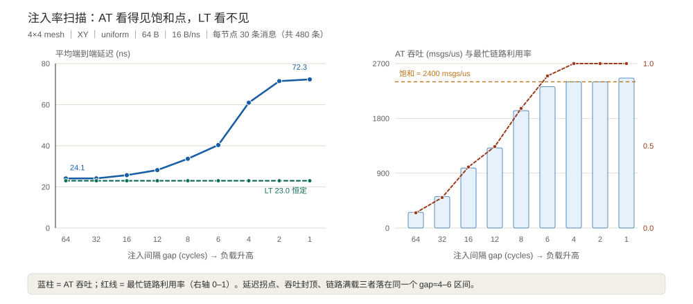
三个独立指标指向同一个拐点：延迟在 gap≈6 开始翘起、吞吐在 ≈2400 msgs/us 封顶、最忙链路在 gap≈4 打满。这就是容量规划要的「余量在哪」。
LT 一列从头到尾 23.00 ns。它并不是跑错了，只是 ready/valid 握手没有排队这个概念。
同为 16 节点、XY 路由、uniform 流量：
| 拓扑 | 平均跳数 | gap=8 延迟 | gap=4 延迟 | gap=4 吞吐 |
|---|---|---|---|---|
| 4×4 mesh | 3.6667 | 33.67 ns | 60.98 ns | 2400 msgs/us |
| 4×4 torus | 3.1333 | 23.64 ns | 45.53 ns | 2775 msgs/us |
| 16 节点 ring | 5.2667 | 313.20 ns | 349.53 ns | 332 msgs/us |
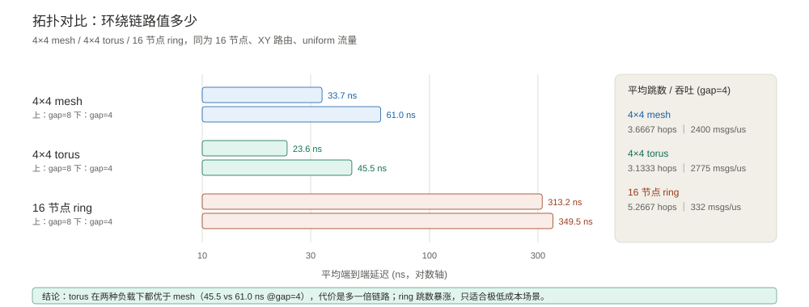
torus 的环绕链路把平均跳数从 3.67 降到 3.13，两种负载下都优于 mesh；代价是多一倍长链路。ring 平均跳数 5.27，吞吐只有 mesh 的 1/7，且几乎不随注入率变化——它被路径长度而非注入率卡死。
架构决策：如果布线预算允许长连线，torus 在这组 workload 下是明确更优的选择；ring 只在极端成本敏感场景才成立。
4×4 mesh、gap=4，平均端到端延迟（ns）：
| 流量 | XY | YX | Oblivious |
|---|---|---|---|
| uniform | 60.98 | 61.14 | 172.19 |
| transpose | 86.99 | 86.90 | 62.97 |
| bitcomp | 95.64 | 96.04 | 62.28 |
| hotspot | 135.44 | 138.24 | 215.27 |
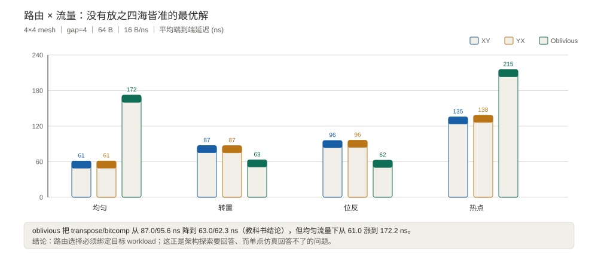
逐包随机选 XY/YX 的 oblivious 路由，把 transpose / bitcomp 这类对抗性置换流量从 87.0 / 95.6 ns 降到 63.0 ns——这是路由算法教科书里的经典结论，模型复现出来了。
但同一张表也给出反面：oblivious 在均匀流量下从 61.0 涨到 172.2 ns，在热点流量下从 135.4 涨到 215.3 ns。它打散了确定性 XY 在这组合成流量里天然形成的链路均衡，反而制造了新的争用。
诚实说明：这个方向性结论依赖具体的流量序列和 rt_choice 生成方式，不能当成「oblivious 必然伤害均匀流量」的普遍规律。它恰恰说明路由选型必须绑定目标 workload，靠单点仿真下结论是危险的——这正是架构探索存在的意义。| 消息长度（bw=16） | 平均延迟 | 吞吐 | 链路带宽（msg=64 B） | 平均延迟 | 吞吐 |
|---|---|---|---|---|---|
| 32 B | 25.41 ns | 3780 msgs/us | 8 B/ns | 123.61 ns | 1383 msgs/us |
| 64 B | 60.98 ns | 2400 msgs/us | 16 B/ns | 60.98 ns | 2400 msgs/us |
| 128 B | 123.61 ns | 1383 msgs/us | 32 B/ns | 25.41 ns | 3780 msgs/us |
| 256 B | 234.97 ns | 719 msgs/us | — | — | — |
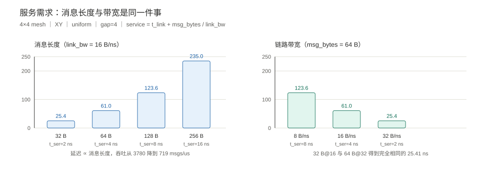
32 B @ 16 B/ns 与 64 B @ 32 B/ns 得到完全相同的 25.41 ns——因为两者的 t_serialize = 2 ns 一样。这不是巧合，是服务模型的自洽性检查：模型确实只通过 msg_bytes / link_bw 这一个比值感知这两个参数，也正是 LT 算带宽账的依据。
架构决策：给定链路带宽预算，把大消息拆小、或提高链路带宽，效果在服务时间上等价；真正的取舍在包头开销、缓冲面积和实现复杂度，那些不在本层模型的能力范围内。
把 §9.4 的解析式和 §11.1 的 LT 列放在一起，粗粒度探索的完整答案就出来了：
| 检查项 | LT 给得出吗 | 依据 |
|---|---|---|
| 每个 (src, dst) 能否送达 | 能 | 480 条消息全部到达，边界丢包 0 |
| 路径几跳 | 能 | avg_hops = 3.6667 |
| 每跳占链路多久 | 能 | t_service = 5 ns（其中 t_serialize = 4 ns） |
| 链路带宽够不够 | 能（一阶） | 需求 0.125 msgs/ns/节点 vs 服务率 0.2 msgs/ns/链路 |
| 零负载端到端延迟 | 能 | avg_hops × (t_rc + t_service) + sink = 23.00 ns |
| 排队延迟、饱和点、尾延迟 | 不能 | 没有 link_free_at，没有 credit 反压 |
先跑 LT 把连通性和带宽账算清楚，再跑 AT 看延迟与拥塞——这是两个模型最自然的协作方式。
| 对比 | 实测 | 说明 |
|---|---|---|
AT vs LT（sc_start 内核） | 6.88 ms vs 0.95 ms，慢 7.3× | 9 次取最小，排除进程启动 |
| 43 轮扫描主体 | 3.9 s | 含 43 次进程启动、CSV 汇总与计时基准 |
计时说明：毫秒级测量受系统调度影响，重复运行上表倍率会明显波动（历史实测 5–9×）；正文引用的是量级，不是精确值。
AT 内核比 LT 慢约 5–9×，换来的是整条延迟-负载曲线、饱和点和链路利用率——很划算。43 轮扫描主体在数秒内完成，这个数量级才允许把「拓扑 × 路由 × 流量 × 注入率 × 消息长度」组合起来看，而不是挑几个点碰运气。
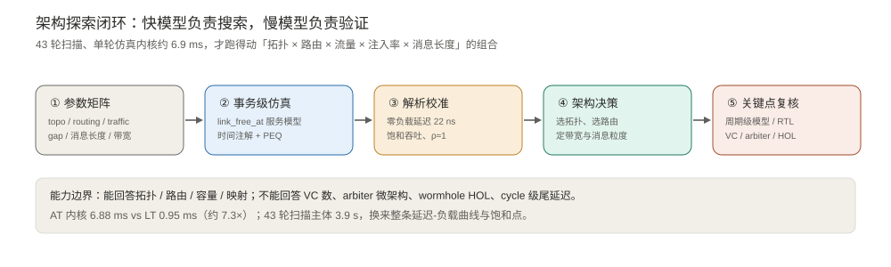
| 能回答（本模型可信） | 不能回答（需要周期级模型或 RTL） |
|---|---|
| 拓扑相对优劣、平均跳数、bisection 影响 | VC 数量与分配策略的精确收益 |
| 路由算法在目标 workload 下的相对表现 | arbiter 微架构（可分离分配、迭代次数） |
| 注入率-延迟曲线、饱和吞吐、设计余量 | 逐周期 HOL blocking、流水线气泡 |
| 消息长度 / 链路带宽的一阶影响 | cycle 级尾延迟、时钟门控 |
| 热点定位、最忙链路、任务映射趋势 | 精确 power / area / 布线长度 |
| 趋势、拐点、方案排序 | 绝对值精度、与 RTL 逐 cycle 对齐 |
混合策略才是对的：用事务级模型在上百个设计点里搜索，把候选缩到三五个；再对这几个点跑周期级模型（乃至 RTL / BookSim2）验证关键微观效应。快模型负责搜索，慢模型负责验证。
另外两个必须说清的近似：
配套代码里还保留了 code/tlm_feature_tour.cpp（make run-tour），把 peq_with_get / cancel_all、deep_copy_from、多 passthrough initiator、大小端助手、DMI 与 analysis port 逐一演示，方便对照 TLM 接口本身。
| 坑 | 现象 | 解法 |
|---|---|---|
| PEQ 回调里的悬空迭代器 | oblivious+hotspot 30 次里崩 20 次，gdb 定位到 std::vector::operator[](18446744073691660014) | nb_transport_bw 会同步触发上游 END_RESP，重入本 router 并 erase 掉 rx_ctx 条目。必须先把 bind / port 取到局部变量再调用 |
| SystemC C++ 标准 ABI | undefined reference to sc_api_version_2_3_4_cxx201402L | 库与应用必须用同一标准编译；库用 -DCMAKE_CXX_STANDARD=14，应用 -std=c++14 |
| MSYS make 重置 TMP | Cannot create temporary file in C:\WINDOWS\: Permission denied | Makefile 里 export TMP/TEMP/TMPDIR 到可写目录 |
| 链路利用率 > 1 | 热点流量算出 3.53 | 分母改用「该端口首次服务开始 → 末次服务结束」的活跃窗口，而不是全局观测窗口 |
multi_passthrough_target_socket 零绑定 | torus/ring 报 complete binding failed: port not bound | 所有端口都有邻居时 NullSink 一个绑定都没有；用一个永不出事务的 DummyInit 兜底 |
| LT temporal decoupling | 延迟统计虚高 | inject_time = sc_time_stamp() + qk.get_local_time() |
| LT 握手字段读取时机 | release() 之后 payload 回池，rv_ext 已被清空 | 必须在 release() 之前读 valid / ready |
tlm_IGNORE_COMMAND 拼错 | 编译报 did you mean TLM_IGNORE_COMMAND | 常量名是 tlm::TLM_IGNORE_COMMAND |
tlm_analysis_fifo | SystemC 2.3.4 + C++14 名字查找失败 | 改用自定义 tlm_analysis_port + tlm_analysis_if |
| 大小端助手 | 模板参数推导失败 | 显式写 tlm_to_hostendian_generic<unsigned int> |
tlm_mm 缺失 | set_auto_extension 触发 m_mm != 0 断言 | 演示用 payload 也先 set_mm(&mm) |
| DMI | 想给 router 造一个直访指针 | 有状态互连正确做法是拒绝，不要硬造 |
| 文件 | 内容 |
|---|---|
SystemC-TLM-Router建模.md | 本文（Markdown 源文件） |
SystemC-TLM-Router建模.html | 网页阅读版，表格 / 代码 / 配图排版后可直接用浏览器打开 |
assets/router-arch-spec.png | 真实论文 Fig.1 架构图（从原 PDF 裁出） |
assets/tlm-basics.svg | TLM 建模基本思路：事务、socket、时间注解、AT / LT |
assets/router-basics.svg | Router 基本原理：端口、四级流水、credit 流控 |
assets/protocol-credit-vs-rv.svg | credit vs ready/valid：两套协议、两种探索粒度 |
assets/txn-abstraction.svg | 抽象层级决策：丢什么、留什么 |
assets/link-server-model.svg | 链路单服务器模型与排队时间线 |
assets/dse-latency-throughput.svg | 注入率扫描：AT/LT 延迟与吞吐、饱和点 |
assets/dse-topology.svg | mesh / torus / ring 对比 |
assets/dse-routing-traffic.svg | 路由 × 流量模式对比 |
assets/dse-msg-bw.svg | 消息长度 / 链路带宽敏感性 |
assets/arch-exploration-loop.svg | 架构探索闭环与能力边界 |
code/noc_txn_common.h | 公共类型：txn_ext / rv_ext / HopCtx、扩展相位、memory manager、拓扑/路由/流量、配置 |
code/router_txn.h | AT router：credit 流控、链路服务模型、四相、PEQ、时间注解、DMI/debug、统计 |
code/router_txn_lt.h | LT router：ready/valid 握手 + b_transport 固定延迟累加、带宽账统计 |
code/noc_txn_top.cpp | 统一顶层：三种拓扑、三种路由、四种流量、两套注入器、DMI/debug、可解析 CSV 输出 |
code/tlm_feature_tour.cpp | TLM 接口巡礼：peq_with_get/cancel_all、deep_copy_from、多 passthrough initiator、analysis port、大小端、DMI、global quantum |
code/Makefile | 编译 / 运行 / 扫描 |
tools/sweep.py | 43 轮参数扫描驱动，输出 data/dse_results.csv 与 data/dse_meta.json |
tools/make_figs_txn.py | 由 CSV 与元数据生成全部实测配图 |
tools/refresh_article.py | 由 CSV 与元数据同步文章表格与正文数字，并做一致性自检 |
tools/md2html.py | 生成网页阅读版 |
验证记录：SystemC 2.3.4 + GCC（MinGW-ucrt64）+ -std=c++14，noc_txn_demo / tour 全部编译通过；43 轮扫描全部成功，480 条消息每轮全部到达、边界丢包 0；AT credit 守恒（issued = returned）、LT 握手 stalls = 0；崩溃修复后同一配置压测 30 次 0 失败。
| 项 | 值 |
|---|---|
| 仓库 | github.com/andyzhenghome/systemc-tlm-router-dse |
| 分支 | main（公开） |
| 内容 | 本文 Markdown / HTML、全部源码与 Makefile、10 张 SVG 配图与论文架构图、43 轮扫描的 CSV 与计时元数据 |
依赖 SystemC 2.3.4（库与示例必须用同一 C++ 标准编译，本文为 C++14）、g++ 与 Python 3（仅标准库）。编译产物和本地 SystemC 构建目录不入库，所以 clone 后要显式传入安装前缀 SYSTEMC（指向含 include/ 与 lib/ 的目录）：
git clone https://github.com/andyzhenghome/systemc-tlm-router-dse.git
cd systemc-tlm-router-dse/code
make SYSTEMC=/path/to/systemc # 编译 noc_txn_demo + tour
make run-at GAP=8 # 轻载 AT（credit 流控）
make run-lt GAP=8 # LT 对照（ready/valid）
./noc_txn_demo at 4 4 30 4 xy torus uniform 64 16
make run-tour # TLM 接口特性巡礼
make sweep # 43 轮扫描 + 出图 + 同步本文数字 + 生成 HTMLmake sweep 会重刷 data/dse_results.csv、全部 SVG、本文的表格与正文数字以及网页版；同步脚本锚点驱动且带一致性自检，重复运行不会漂移。只想看数据而不编译，直接读仓库里的 data/dse_results.csv 即可拿到 43 轮原始结果。
架构探索模型的难点从来不是「能不能做细」，而是「敢不敢做粗、以及粗到什么程度还敢下结论」。
这一版给出的答案是：实现细节可以丢，竞争不能丢。用 link_free_at[op] 一个时间戳数组把竞争上移到链路级，用 sc_time& 时间注解把排队和串行化时间传递下去，TLM 的四相握手、PEQ、扩展、DMI、analysis port 一个没少。
在此之上，两套流控协议划出了两种探索粒度：LT 用 ready/valid，回答连通性和带宽够不够；AT 用 credit，回答延迟和拥塞怎么样。同一份 spec、同一套参数、同一个顶层，换一个模式就能从「路通不通」切到「会不会堵」——这才是统一 router 模型对架构探索真正的价值。
然后先用解析式校准零负载延迟和饱和吞吐，再去扫参数——没有校准的架构探索，只是把偏见画成了图表。
最后别忘了一句：模型能回答的是趋势和拐点，不是绝对精度。把候选从一百个缩到三个之后，该回到周期级模型甚至 RTL 去验证的，一步都不能省。
IQRouter 源码梳理。 <https://deepwiki.com/booksim/booksim2/5-router-architecture>cancel_all()、deep_copy_from 等）。 <https://www.doulos.com/knowhow/systemc/tlm-20/whats-new-in-tlm-201/>tlm_phase.h 的 phase registry、tlm_gp.h 的引用计数与扩展机制）。